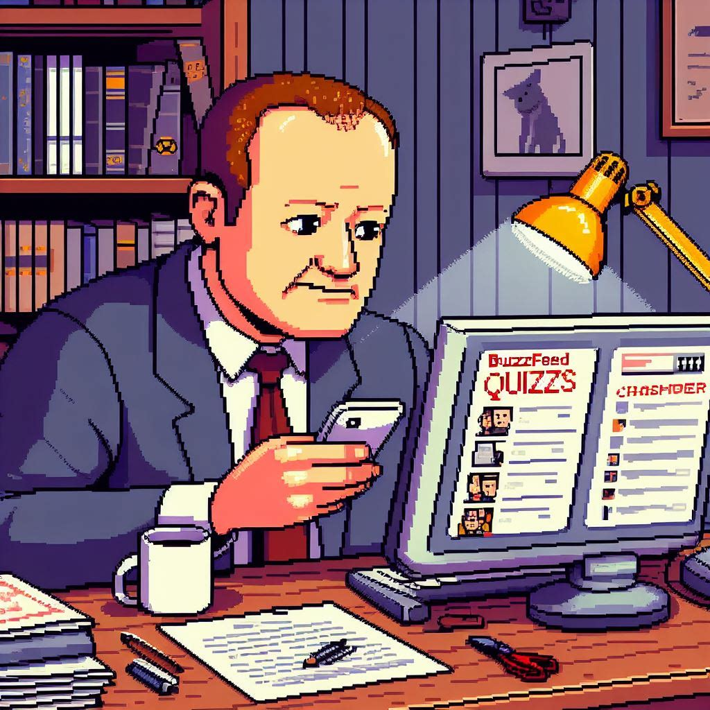
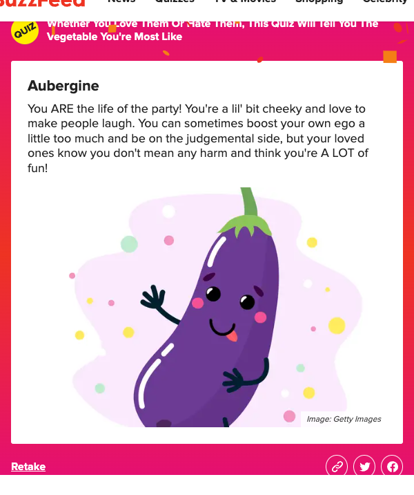
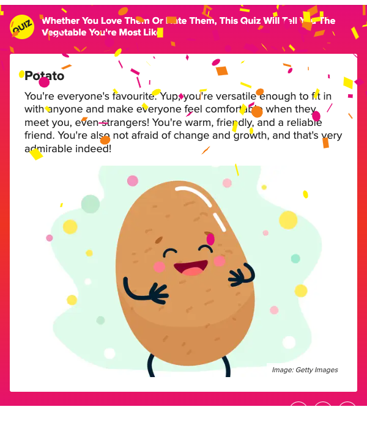

from playwright.sync_api import sync_playwright, TimeoutError
import pandas as pd
import random
import re
from classes.character_person import CharacterPersona
from functions.chat_gpt_quiz_response import answer_quiz_question
if __name__ == "__main__":
frasier_crane = CharacterPersona(
character_name="Frasier Crane",
character_persona="""
My pompous and preppy attitude distinguishes me from the rest of the cast (except for my brother),\\
as I attempt to emulate those of the upper elite class. However, amidst these traits, I am also\\
a kind and gentle individual, willing to help out friends and strangers with my psychiatric talents.\\
My pursuits of the finer things in life are also reflected by my tastes in clothing and even furniture,\\
which are quite eccentric, often part of the exotic, expensive, rare, and chic."""
)
martin_crane = CharacterPersona(
character_name="Martin Crane",
character_persona="""
As a retired policeman, I spend my days relaxing in my chair, watching TV, playing with Eddie\\
(my dog), and going to the bar to mingle with my friends. Unlike my sons though, I'm more down\\
to earth, as reflected by my chair and my speech, which is not as flamboyant or theatric as theirs.\\
A common pursuit I do share with my boys is that of women; as a widower, I am looking for that\\
partner to spend my last days with in happiness and bliss.
Reflecting a man past his prime, I still seek to hold onto my independence as much as possible.\\
My macho pride often resents the fact that I am disabled, needing to be looked after like some\\
baby. While most of the apartment's fixtures belong to Frasier, I establish my presence (though\\
small) with my chair; making sure that I still have a voice to be heard and not ignored due to my\\
seniority. My experiences have taught me the value of the moment, cherishing the little things\\
that are important in life, such as family and love."""
)
character_personas = [frasier_crane, martin_crane]
all_character_responses = []
for character_persona in character_personas:
character_responses = {
"name": character_persona.character_name,
"quiz_question": [],
"chat_gpt_response": []
}
with sync_playwright() as p:
browser = p.chromium.launch(headless=False)
page = browser.new_page()
page.goto(
"https://www.buzzfeed.com/elizabeth_cotton/which-vegetable-am-i-quiz")
(
page
.get_by_role("button", name="Reject All")
.click()
)
quiz_elements = (
page
.locator(".question__iRCfm")
.all()
)
for quiz_element in quiz_elements:
question_text = (
quiz_element
.locator(".questionTileTextWrapper__maGEu")
.inner_text()
)
radio_response_buttons = (
quiz_element
.get_by_role("radiogroup")
)
if radio_response_buttons.is_visible():
question_answers = (
radio_response_buttons
.locator(".answerWrapper___geYw h3")
.all_inner_texts()
)
else:
question_answers = (
quiz_element
.locator(".answerText__mwiUQ")
.all_inner_texts()
)
question_answers = "\n".join(question_answers)
chat_gpt_response = answer_quiz_question(
system_instructions=character_persona.character_persona,
question_text=question_text,
question_answers=question_answers
)
if radio_response_buttons.is_visible():
try:
(
quiz_element
.locator(".answerWrapper___geYw h3")
.filter(
has_text=re.compile(f"^{chat_gpt_response}$")
)
.click()
)
except TimeoutError:
(
quiz_element
.locator(".answerWrapper___geYw h3")
.nth(random.randint(0,5))
.click()
)
else:
(
quiz_element
.locator(".answerText__mwiUQ")
.filter(
has_text=re.compile(f"^{chat_gpt_response}$")
).click()
)
character_responses["quiz_question"].append(question_text)
character_responses["chat_gpt_response"].append(chat_gpt_response)
(
page
.locator(".gradient__R2MwP")
.screenshot(
path=f"output/buzzfeed_vegetable_quiz/chat_gpt_4_scorecard_{character_persona.character_name.replace(" ", "_").lower()}.png")
)
browser.close()
all_character_responses.append(character_responses)
all_character_responses = (
pd
.concat(
[pd.DataFrame(character_response)
for character_response in all_character_responses]
)
)
all_character_responses.to_csv(
"output/buzzfeed_vegetable_quiz/character_quiz_response.csv")Background
AI chatbots are surprisingly adaptable. Using Buzzfeed’s Vegetable Personality Quiz, I tested whether changing Frasier Crane and Martin Crane would cause an AI to produce different outcomes
How
Our approach here is to show how a simple change in persona alters how Chat-GPT answers a question. As always, we use another Buzzfeed quiz. This time, we’re going for the Vegetable Personality quiz (no words). For personas, we could approach this in different ways. We could write a paragraph describing a fictional individual, altering various personality dimensions (e.g., Openness, Conscientiousness, etc.). We could also take a personality assessment and feed the output to Chat-GPT. Here, we’ll use the descriptions of fictional characters offered by others to alter the personality adopted by Chat-GPT. The fictional characters I selected are Fraiser Crane and his father, Martin Crane. Why? I love the show.

Character Descriptions
To start with, we need some personality descriptions of both Frasier and Martin. The good news was that someone else has done this here. Each of the descriptions is in third person, however. Therefore, I passed each character description to Chat-GPT and converted this to first person. For example, this:
His pompous and preppy attitude distinguishes him from the rest of the cast (except for his brother)…
became:
My pompous and preppy attitude distinguishes me from the rest of the cast (except for my brother)…
Each of these descriptions were passed to Chat-GPT as the initial prompt before responding to any of the questions. In a sense, it was ensuring that Chat-GPT adopts the personality of either Frasier or Martin when answering a question.
Results
It worked! Our prompting approach did lead to different outcomes. Frasier turns out to be most like an Aubergine; whereas, Martin is most like a Potato. Even typing this is comical 😂..
Let’s inspect the vegetable profiles in more detail then.
Frasier the Aubergine
The description is apt. It describes Frasier as having a, somewhat, inflated ego and tends to be on the judgmental side. Despite this, the people around him know he means no harm and appreciate the fun he brings.

Martin the Potato
Again, this is well fitting description of Martin. He’s a warm, friendly, and reliable character who can fit in with anyone. With regards to change, he may not necessarily be afraid, but it may take a while for him to accept changes.

Comparing Quiz Responses
As a final step, we can compare the responses from each Chat-GPT run. The table below presents the Buzzfeed questions, along with the responses of Frasier and Martin. We can see the differences in how each persona responded to the question. For example, Frasier considers himself to be a good listener, whilst Martin sees themselves as laid back and super friendly. We also see a difference in sense of style. Frasier wants to keep it classy. Martin, on the other hand, only wants to wear what they’re comfortable in wearing.
library(data.table)
library(flextable)
character_responses <-
fread(
"character_quiz_response.csv",
header = T)
character_responses <-
dcast(
character_responses,
V1 + quiz_question ~ name,
value.var = "chat_gpt_response"
)
setnames(
character_responses,
old = c("V1", "quiz_question"),
new = c("Index", "Quiz Question")
)
character_responses |>
flextable() |>
autofit()Index | Quiz Question | Frasier Crane | Martin Crane |
|---|---|---|---|
0 | What's your favourite type of weather? | Sunshine! | Sunshine! |
1 | How are you spending your weekend? | Relax, spend time with myself, maybe go for a nice walk | Relax, spend time with myself, maybe go for a nice walk |
2 | How would your friends describe you? | Curious, a good listener | Laid back, super friendly |
3 | What would you say is your worst trait? | I have a superiority complex at times | I try and do too much |
4 | Where are you most likely to meet the next person you'll date? | Through mutual friends | On a night out |
5 | Which of these colours do you like best? | Purple | Brown |
6 | Do you like to eat vegetables? | I like to eat some of them, I can be quite picky | I eat them because I need to, they're okay |
7 | Which of these vegetables do you enjoy the most? | Aubergine | Potato |
8 | How open are you to change? | As long as it benefits me, I'll accept it | I don't think change is all that necessary, I like things as they are |
9 | What's your sense of style? | I like to keep it classy and put together | I only wear what I'm comfortable in |
10 | What type of person are you at a party? | The one having a deep chat in the corner | The one having a deep chat in the corner |
11 | Finally, pick a hobby to enjoy... | Reading | Watching movies |
Conclusion
In conclusion, our trivial experiment demonstrates the significant impact of providing a persona to Chat-GPT on its responses to personality questions. This ability of AI to tailor its responses based on predefined personas raises important considerations, particularly in contexts like recruitment processes where personality assessments play a crucial role.
The findings underscore the need for organisations to critically evaluate the use of AI in decision-making processes, particularly when it comes to assessing personality traits. The potential for candidates to manipulate Chat-GPT responses to align with desired company values poses ethical concerns that warrant careful consideration.
Moving forward, it is essential for future research to explore ways to mitigate the risks associated with the manipulation of AI-generated responses. Additionally, further investigation into the broader implications of generative AI in human interactions and decision-making processes is warranted.
In essence, our experiment highlights the evolving landscape of AI technologies and the importance of thoughtful consideration and ethical oversight in their utilisation. By understanding the capabilities and limitations of generative AI, we can navigate its integration into various domains responsibly and ethically.